Melatih kedisiplinan, kerja sama, dan jiwa kepemimpinan siswa.
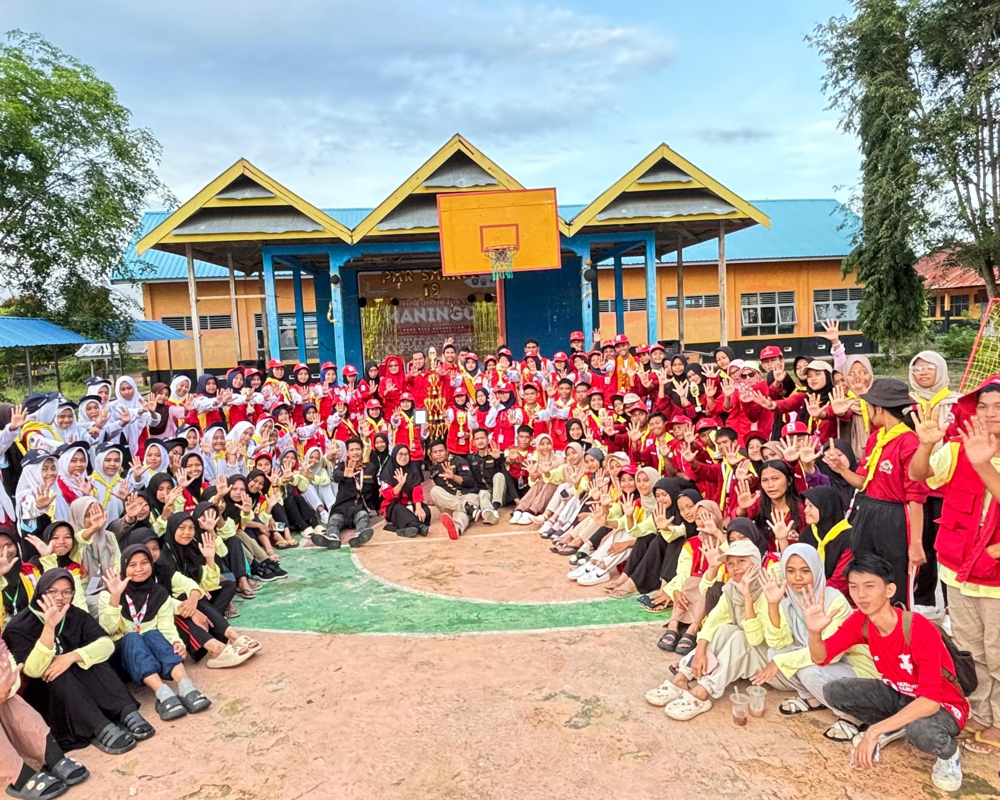
PMR
Ekskul yang fokus pada pertolongan pertama dan kegiatan kemanusiaan.
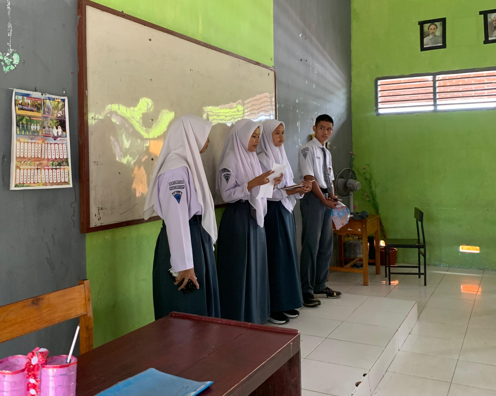
PIK-R
Ekstrakurikuler yang membahas kesehatan remaja dan pengembangan karakter positif.
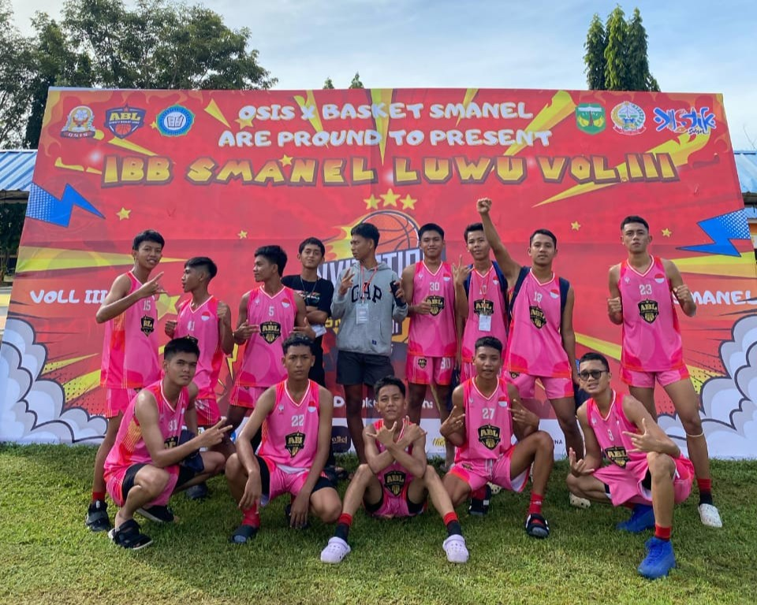
Basket
Wadah bagi siswa yang ingin mengembangkan kemampuan bermain basket secara sportif.
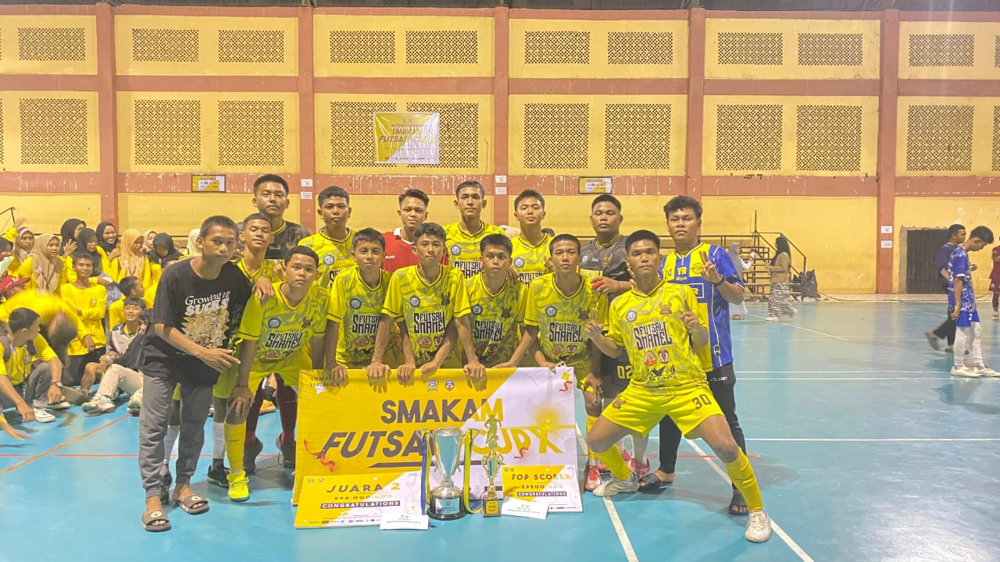
Futsal
Wadah bagi siswa yang memiliki minat dan bakat di bidang olahraga, khususnya futsal. Kegiatan ini bertujuan untuk mengembangkan kemampuan teknis, kerja sama tim, serta membentuk jiwa sportivitas.
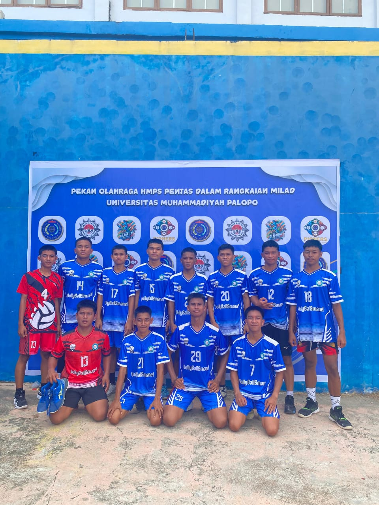
Volly
Ekskul untuk melatih kerjasama tim melalui permainan bola voli.
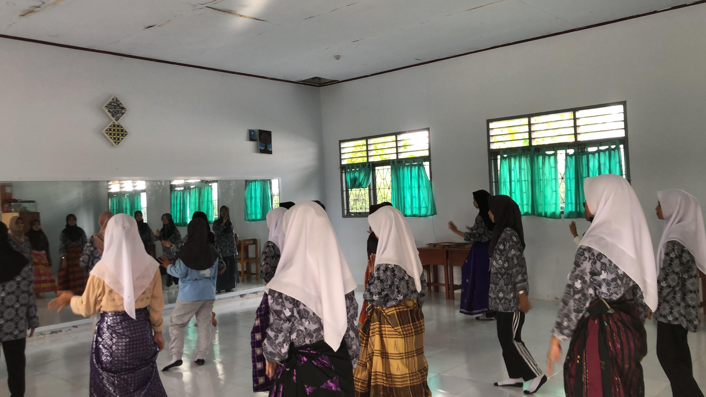
Seni
Tempat bagi siswa mengekspresikan kreativitas melalui berbagai bidang seni.
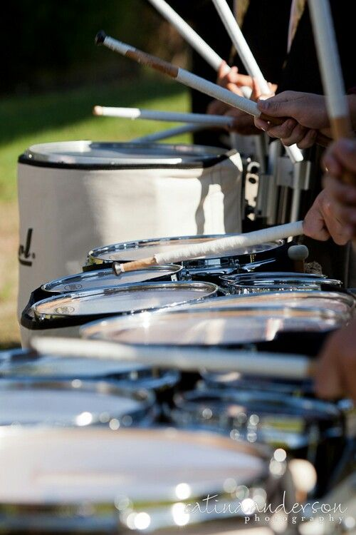
Drumband
Kegiatan musik baris-berbaris yang melatih kekompakan dan keterampilan bermain alat musik.
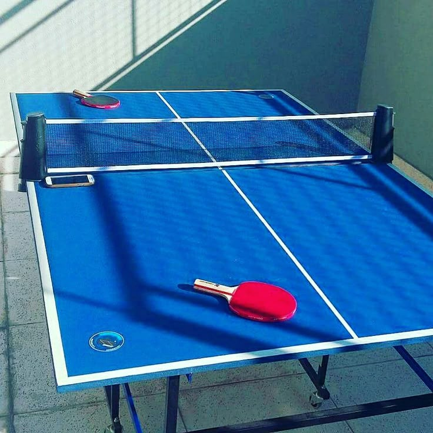
Tenis Meja
Ekskul olahraga yang mengasah konsentrasi dan kecepatan refleks.
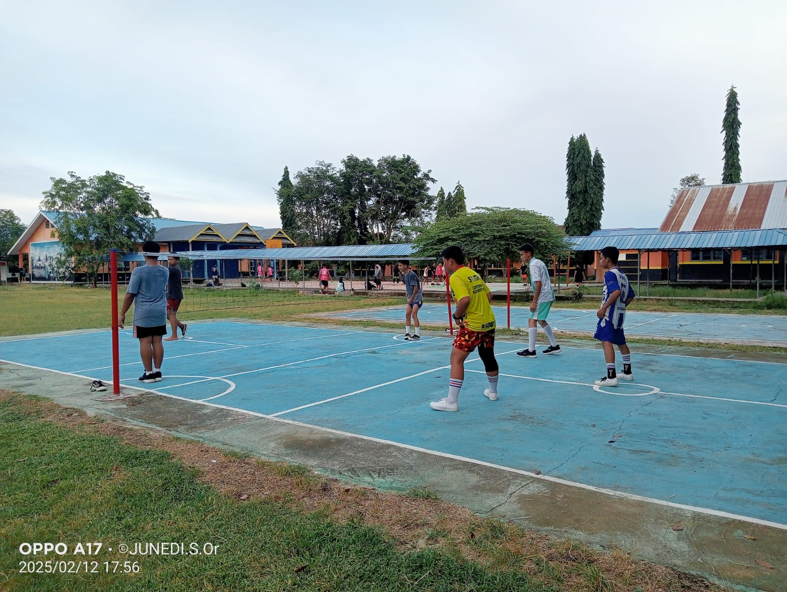
Takraw
Permainan bola khas Asia Tenggara yang melatih kelincahan dan ketepatan tendangan.
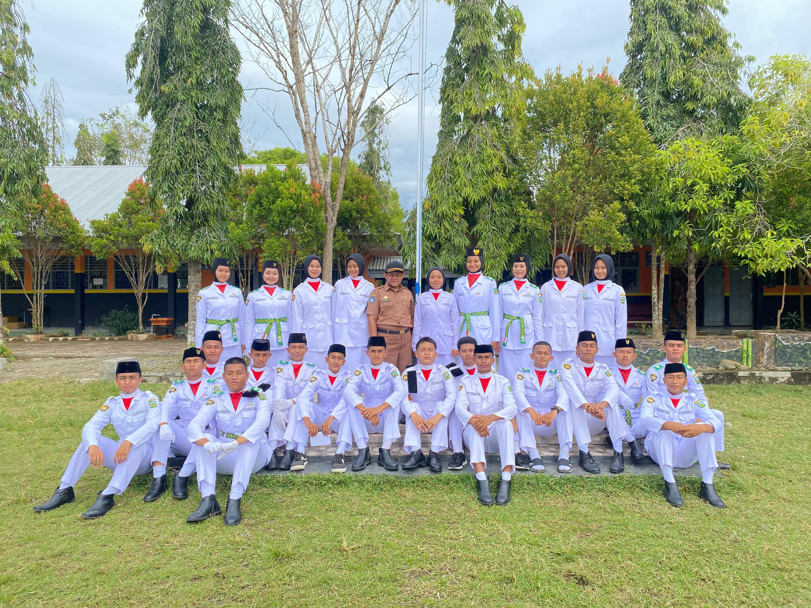
Paskib
Melatih dan mengembangkan siswa dalam bidang baris berbaris, upacara bendera, serta menanamkan nilai-nilai kedisiplinan, cinta tanah air, dan patriotisme.
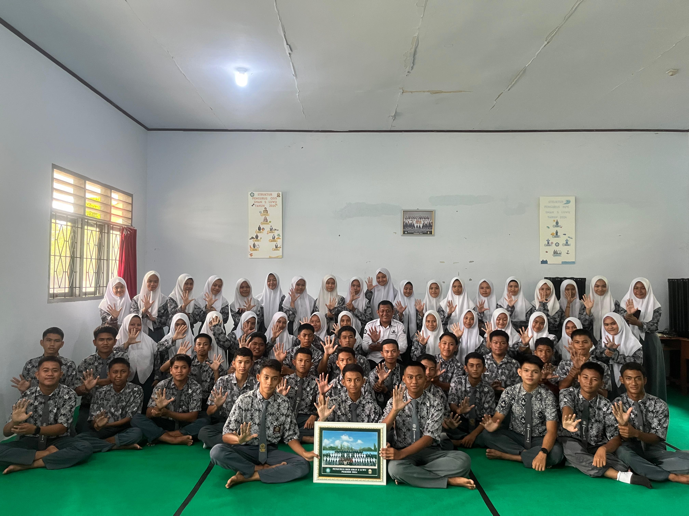
OSIS
Sebagai wadah bagi siswa untuk berorganisasi, mengembangkan potensi, dan berkontribusi dalam kegiatan sekolah.